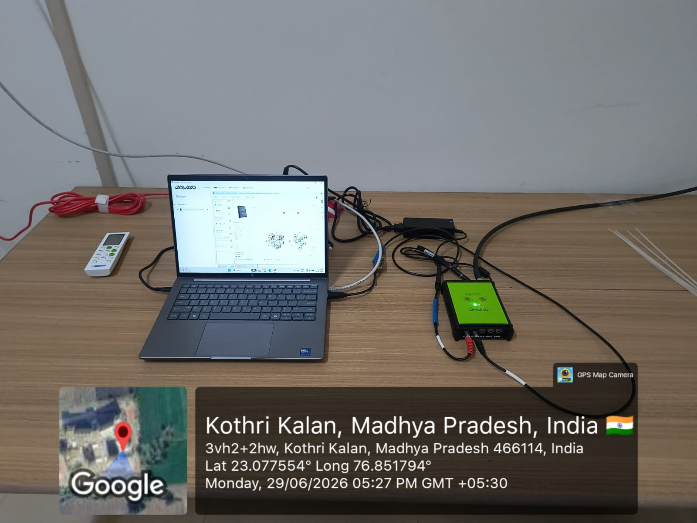
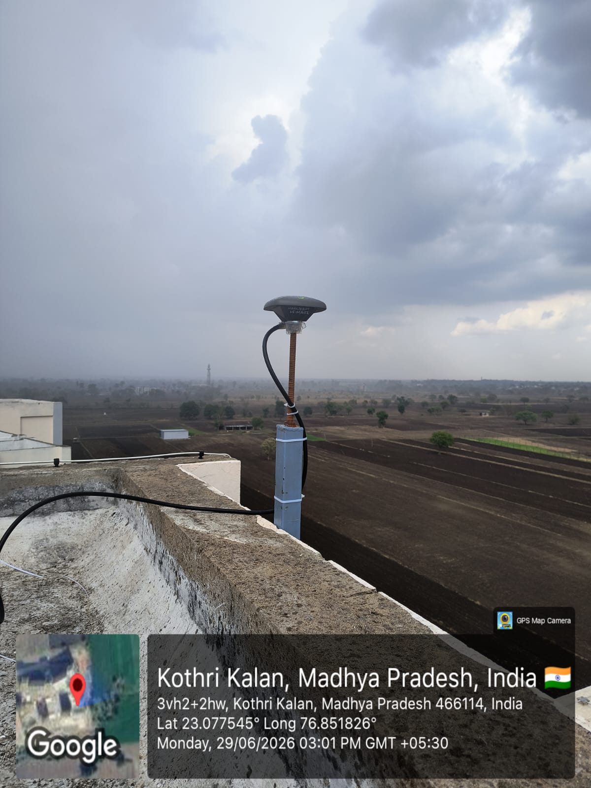

Ionospheric Variability During the 10 October 2024 Geomagnetic Storm: A Regional Analysis Across Europe
Source: Atmosphere, Vol. 16(9), 1029


Senior Assistant Professor of Physics
School of Advanced Sciences and Languages (SASL)
VIT Bhopal University
Investigating ionospheric plasma dynamics, solar flare impacts, Total Electron Content (TEC) fluctuations, and space weather forecasting.
The research activities of Dr. Sharad Chandra Tripathi focus on ionospheric physics, solar-terrestrial interactions, plasma dynamics, and space weather phenomena. The work integrates observational data analysis, space science instrumentation, and computational physics methods to investigate how solar activity influences Earth's ionosphere and magnetosphere.
Real-time multispectral observations (Photosphere, Magnetogram, Corona, and Chromosphere) from NASA's Solar Dynamics Observatory.
Studies on ionospheric responses to geomagnetic storms including plasma irregularities, Total Electron Content (TEC) variations, and radio wave propagation.
Analysis of solar flare events and solar transients on ionospheric structure and communication systems.
Observational diagnostics of solar flares, filaments, and surge phenomena for understanding plasma heating mechanisms.
Assessment of geomagnetic storms and solar wind impacts on the Earth's ionosphere under solar cycle variations.
Explore scientific publications by Dr. Sharad Chandra Tripathi covering ionospheric dynamics, total electron content (TEC), solar flare diagnostics, and planetary atmospheres. Filter by research area or publication format, search in real-time, and export standardized citations in BibTeX, APA, or IEEE format.
Source: Atmosphere, Vol. 16(9), 1029
Source: Remote Sensing, Vol. 17(13), 2329
Source: Astrophysics and Space Science, Vol. 370, 4404
Source: Astrophysics and Space Science, Vol. 369, 4323
Source: Monthly Notices of the Royal Astronomical Society (MNRAS), Vol. 532, stae166
Source: Proceedings of the International Astronomical Union, Vol. 18(S365), pp. 23-28
Source: Monthly Notices of the Royal Astronomical Society (MNRAS), Vol. 506(2), stab1663
Source: Journal of Physics: Conference Series, Vol. 640, 012072
Source: Scholar's Press, Monograph
Source: International Journal of Innovative Research in Science, Engineering and Technology, Vol. 4(1), pp. 18491-18497
Source: 2014 IEEE 41st International Conference on Plasma Sciences (ICOPS), IEEE ICOPS / BEAMS
Source: Journal of Advances in Physics, Vol. 4(2), pp. 471-477
Source: Astrophysics and Space Science, Vol. 350(1), pp. 27-34
Source: Journal of Scientific Research, Vol. 6(1), pp. 39-49
Source: Astrophysics and Space Science, Vol. 346(2), pp. 301-309
Source: Icarus, Vol. 221(2), pp. 805-812
Source: International Journal of Geomatics and Geosciences, Vol. 3(1), pp. 182-192
Source: Proceeding of the 2011 IEEE International Conference on Space Science and Communication (IconSpace), IEEE IconSpace
The Space Science Laboratory at VIT Bhopal University hosts an advanced GNSS/NavIC Research Facility established with the support of the National Atmospheric Research Laboratory (NARL), Department of Space, Government of India. The facility is an important node in the Network of GNSS/NavIC Receivers for Ionosphere and Space Weather Observations (North–South Chain), contributing to national efforts in ionospheric monitoring and space weather research.
Equipped with a state-of-the-art GNSS/NavIC receiver featuring specialized scintillation monitoring capabilities, the laboratory provides continuous real-time observations of ionospheric conditions. The facility supports research in ionospheric physics, satellite navigation, plasma dynamics, and space weather while providing students and researchers with access to high-quality scientific data.


The laboratory is equipped with a state-of-the-art GNSS/NavIC receiver featuring specialized ionospheric scintillation monitoring capabilities. The system provides continuous real-time observations of ionospheric conditions for satellite navigation and space weather studies.
Research includes monitoring Total Electron Content (TEC), ionospheric scintillation, signal degradation, and GNSS loss-of-lock events to understand ionospheric variability and its effects on communication and navigation systems.
The facility supports investigations of travelling ionospheric disturbances, solar flares, geomagnetic storms, geodesy, Positioning, Navigation and Timing (PNT), and indigenous NavIC applications.
The GNSS/NavIC facility represents a long-term collaboration between VIT Bhopal University and NARL. Joint research and publications contribute to India's capabilities in satellite navigation, Earth observation, and space science while providing valuable research opportunities for students and young researchers.
Collaboration Opportunities: Faculty members, researchers, and students interested in collaborative research, internships, or project work utilizing the GNSS/NavIC facility are encouraged to contact the Space Science Laboratory.